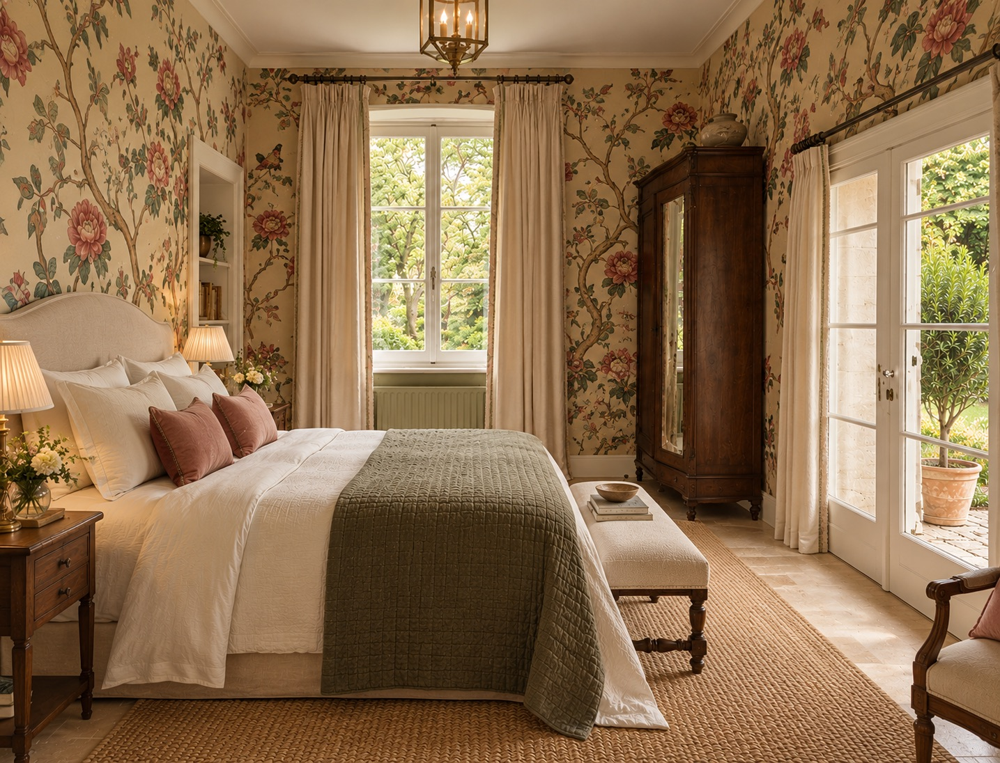
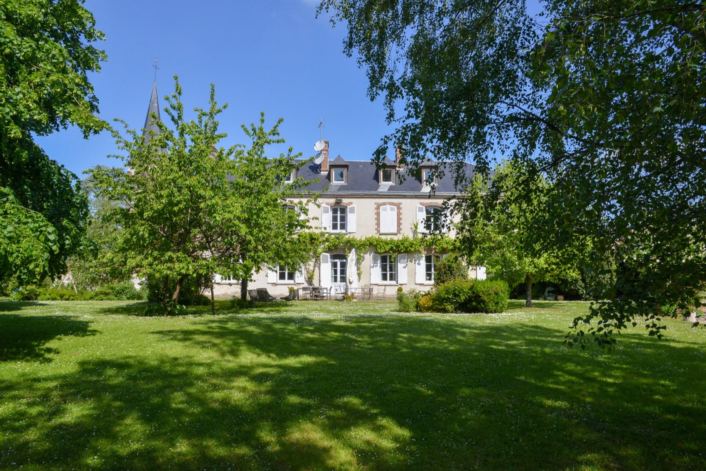
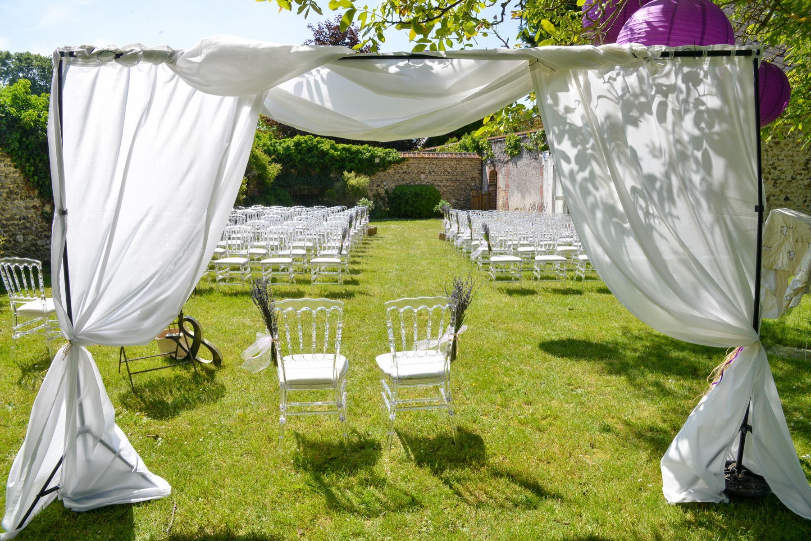
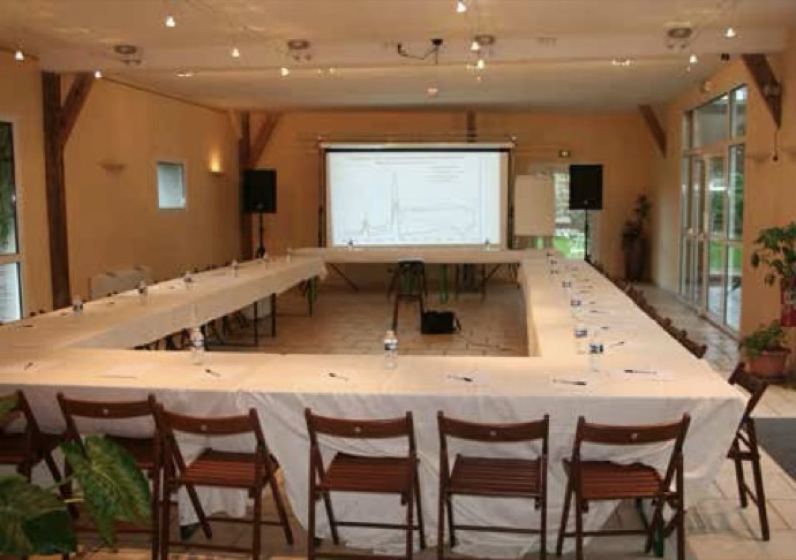
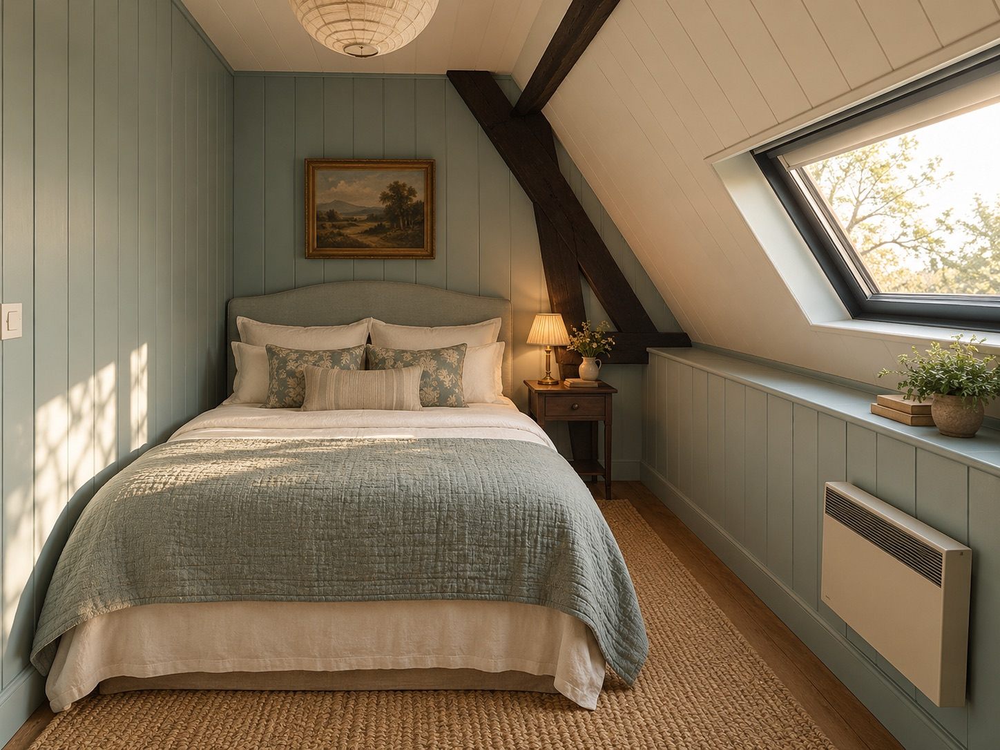
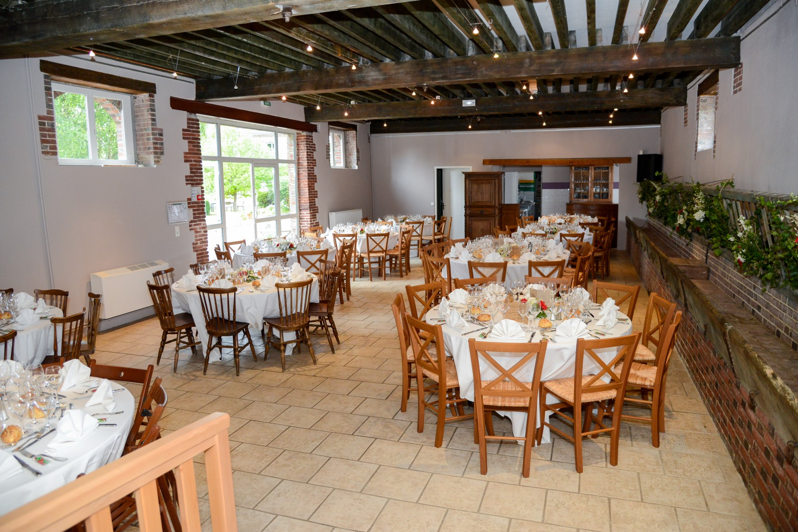
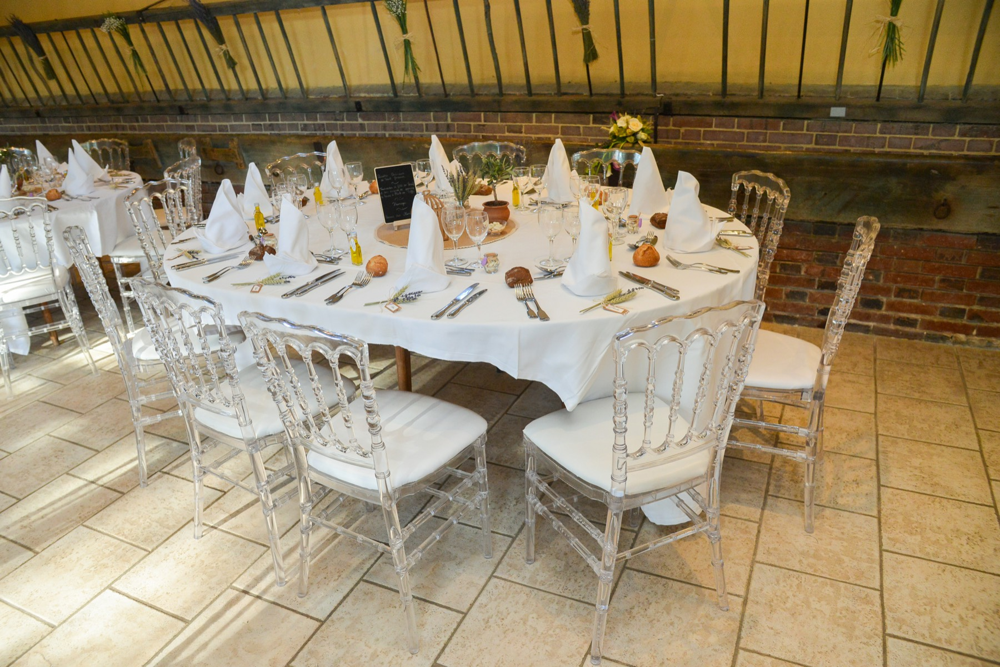
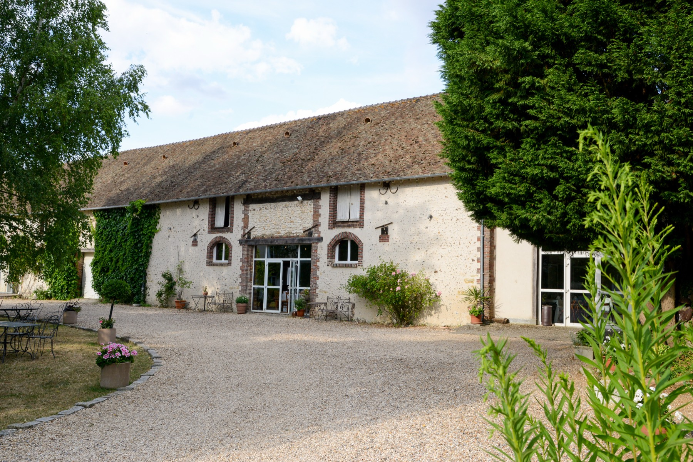
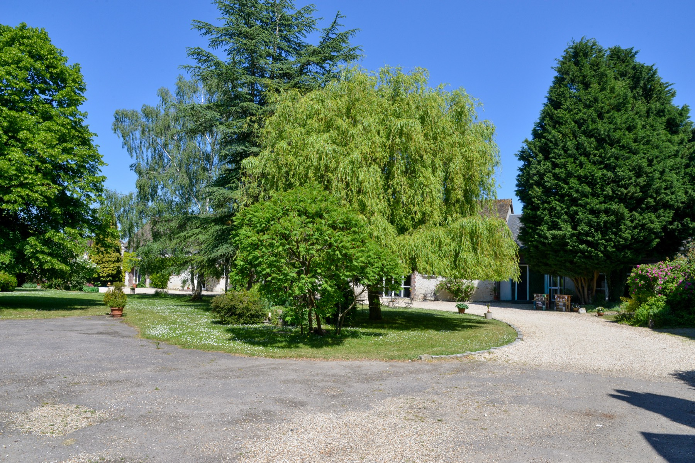
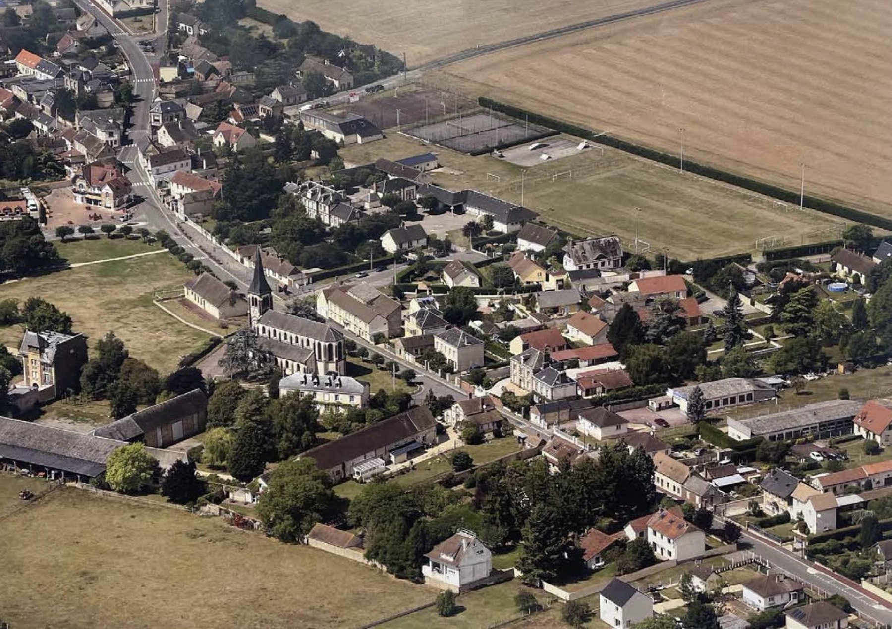

Une chambre de la maison
Au rez-de-chaussée, de plain-pied sur le jardin.

Dans un lieu historique de facteurs d'instruments à vent
Une maison de maître, des granges couvertes de lierre un parc de deux hectares et dix chambres, en bordure d'un village normand qui fabrique des flûtes, des hautbois et des clarinettes depuis le XVIIᵉ siècle.
Le domaine est en rénovation et ouvre en mars 2027.
Un lieu de mariage dans l'Eure, aux portes des Yvelines et de l'Eure-et-Loir, à une heure de Paris. Depuis les années 2000, le domaine accueille mariages et fêtes de famille. Le jour de votre mariage, la maison sert de toile de fond, le parc accueille la cérémonie et le vin d'honneur, et les granges le dîner et la fête.
Une cérémonie laïque sous les grands arbres du parc, face à la maison. L'église du village est juste à côté du domaine.
Dans le parc ou la cour à la belle saison — à l'abri des granges si le ciel normand en décide autrement.
500 m² de salles de réception sous les poutres : grandes tablées ou tables rondes, selon votre idée de la soirée.
On danse dans un village qui fabrique des instruments depuis le XVIIᵉ siècle. Musiciens, DJ ou orchestre : ici, la musique est chez elle.

Une cérémonie dans le jardin, à l'abri des vieux murs de pierre.
Traiteur, musique, fleurs, chambres pour vos proches : dites-nous comment vous imaginez la journée, et nous vous aidons à l'organiser.
Une journée de travail, un comité de direction ou un séminaire de plusieurs jours : de grandes salles lumineuses, dix chambres sur place, un parc pour respirer entre deux sessions, et une histoire à raconter à vos équipes.

L'une des deux salles, aménagée pour une réunion.
Deux salles, 500 m² au total : plénière, ateliers en sous-groupes ou grande tablée pour le déjeuner.
Paris Saint-Lazare → Bueil en moins d'une heure, puis cinq minutes de route. Stationnement sur place pour ceux qui viennent en voiture.
Dans le village des facteurs d'instruments, un atelier musical animé avec Music Hackspace, sur demande : une autre manière de faire équipe.
Deux hectares pour les pauses, les réunions en marchant et les déjeuners dehors à la belle saison.
Le Clos compte dix chambres. On ne reprend pas la route après la fête, et un séminaire peut durer plusieurs jours sans quitter le lieu.

Au rez-de-chaussée, de plain-pied sur le jardin.

Sous les combles, entre lambris et poutres apparentes.
Les chambres sont en cours de rénovation. Ces visuels sont des images de synthèse : ils montrent l'esprit du projet, et les chambres terminées pourront en différer. Ouverture en mars 2027.
Les mariés et leurs proches dorment au Clos : on se prépare sur place le matin, et l'on se retrouve le lendemain sans prendre la voiture.
Arriver la veille, travailler deux ou trois jours d'affilée, dîner ensemble : dix chambres pour une équipe resserrée ou un comité de direction.
Au-delà de dix chambres, gîtes, chambres d'hôtes et hôtels des environs prennent le relais : nous vous indiquons les adresses.
Deux hectares en bordure du bourg de La Couture-Boussey : une maison de maître aux volets blancs, de longues granges autour d'une cour, et un parc planté de grands arbres.

Le cœur des réceptions : dîners, bals, concerts. Poutres apparentes, galerie en mezzanine, lumière naturelle.

Des volumes qui se transforment : séminaire le matin, grande tablée le soir.

De longues granges couvertes de lierre autour d'une cour gravillonnée — les anciens ateliers des facteurs de flûtes.

Pelouses et grands arbres face à la maison : cérémonies, vins d'honneur, photos de groupe, déjeuners dehors.
La Couture-Boussey fabrique des instruments à vent depuis le XVIIᵉ siècle. Hotteterre, Lot, Godfroy, Buffet : les dynasties de facteurs nées ici ont équipé les orchestres de Paris, de Londres et de New York. Le village a toujours son musée des instruments à vent.
Le domaine appartient depuis plus de 300 ans à la famille Lot, facteurs de flûtes traversières, et il est toujours resté dans la famille. Il a abrité le travail des flûtes, puis une ferme, puis, sous le nom de La Ferme des Luthiers, des mariages et des séminaires. Le Clos des Clefs en prend la suite.
Les clefs, ce sont d'abord celles des flûtes et des clarinettes : les petites pièces de métal que les ateliers du village ajustaient à la main. C'est aussi la clef de sol des partitions.

La Couture-Boussey, Eure — le domaine en bordure du bourg historique.
La Couture-Boussey se trouve dans l'Eure, au cœur du triangle Évreux – Dreux – Mantes-la-Jolie : à 5 km d'Anet et de l'Eure-et-Loir, à une vingtaine de kilomètres de Houdan et des Yvelines, à 80 km de Paris. Pour un mariage en région parisienne, le Clos est à une heure de route ou de train.
Paris Saint-Lazare → Bueil, moins d'une heure sur la ligne de Normandie, liaisons fréquentes. La gare est à cinq minutes de route du domaine.
80 km de Paris par l'A13 puis la N13, environ une heure hors heures de pointe. Stationnement sur place, deux accès distincts au domaine.
Dix chambres au domaine pour vos proches ou votre équipe. Pour les autres invités, gîtes, chambres d'hôtes et hôtels des environs : nous vous indiquons les adresses.
À La Couture-Boussey (27750), dans l'Eure, au cœur du triangle Évreux – Dreux – Mantes-la-Jolie : à 5 km d'Anet et de l'Eure-et-Loir, à une vingtaine de kilomètres de Houdan et des Yvelines, et à 80 km de Paris.
Oui : environ une heure de route par l'A13 puis la N13, ou moins d'une heure de train de Paris Saint-Lazare à Bueil, la gare étant à cinq minutes du domaine. Stationnement sur place.
Oui. Le Clos des Clefs succède à La Ferme des Luthiers : c'est le même domaine, avec les mêmes salles de réception, et il appartient toujours à la même famille, la famille Lot, depuis plus de 300 ans.
Oui, le domaine compte dix chambres, pour les mariés et leurs proches ou pour une équipe en séminaire. Pour les autres invités, nous vous indiquons des gîtes, chambres d'hôtes et hôtels des environs.
Oui : journées d'entreprise, séminaires de plusieurs jours, anniversaires et fêtes de famille, dans les 500 m² de salles de réception et le parc de deux hectares.
Sur rendez-vous : écrivez-nous avec le formulaire ci-dessous et nous vous proposons un créneau de visite.
Quelques lignes suffisent. Nous vous répondons personnellement et vous proposons une visite du domaine.
Vous préférez écrire directement ? jb@musichackspace.org
Nous utilisons Google Analytics pour mesurer l’audience de ce site. Aucune mesure n’est effectuée sans votre accord.